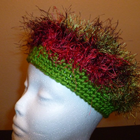

          
            {% for post in paginator.posts %}
          <br/>
          <div class="post">
      
          
          <h2>{{post.title}}</h2>
          <p>{{ post.content }}</p>
          <p><a class="btn btn-default" href="#" role="button">View details &raquo;</a></p>
            {% endfor %}
          </div>

 {% if paginator.next_page %}
    <a class="pagination-item older" href="/page{{paginator.next_page}}">Older</a>
  {% else %}
    <span class="pagination-item older">Older</span>
  {% endif %}
  {% if paginator.previous_page %}
    {% if paginator.page == 2 %}
      <a class="pagination-item newer" href="/">Newer</a>
    {% else %}
      <a class="pagination-item newer" href="/page{{paginator.previous_page}}">Newer</a>
    {% endif %}
  {% else %}
    <span class="pagination-item newer">Newer</span>
  {% endif %}
          
          